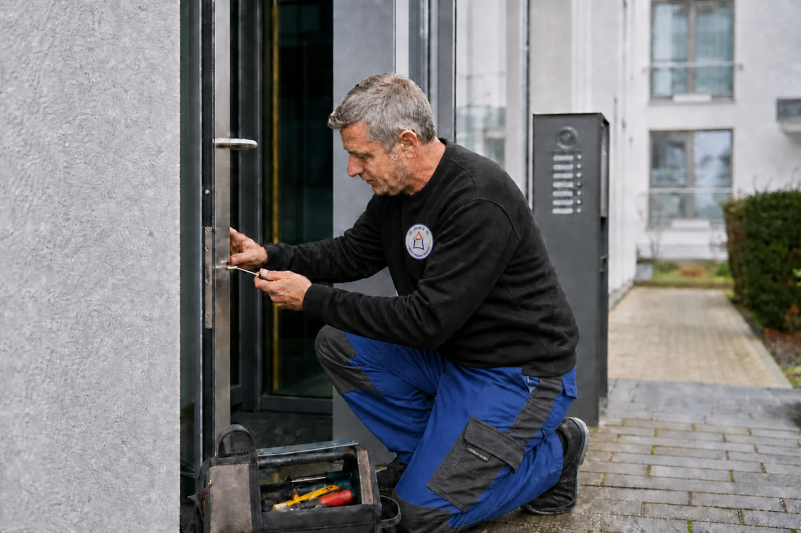

← Zurück zu den Leistungen
HMZ Leistung
Hausmeister- & Objektservice
Zuverlässige Betreuung Ihrer Immobilie mit einem festen Ansprechpartner für die laufenden Aufgaben vor Ort.

Unsere Leistungen
- Regelmäßige Objektkontrollen und Kontrollgänge
- Leerstandsbetreuung und Urlaubsvertretung